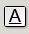
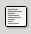
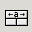

4.3. The Format Toolbar
The Format Toolbar ...
The Format Toolbar.
 Font Chooser.
Font Chooser.
The user can change the font of a selection either by typing the name of a new font in the text area of this box or by clicking on the little arrow to the right of the text area. This will cause a menu to appear from which a font can be chosen.
 Font size
Font size
The user can change the font size of a selection by typing the number of a different font size or by clicking on the little arrow to the right of the entry box and selecting the perferred size.
 Bold
Bold
Change the style of the current cell to be bold, or un bold it if it is already bold.
- Italic
Change the style of the current cell to be italicized .
-  Underline
Change the style of the current cell to be underlined.
-  Left justify..
Justify the contents of the cell to the left of the cell.
- Center
Center the content of the cells.
 Right Justify
Right Justify
Justify the content of the cells to the right side of the cells
-  Right Justify
Justify the content of the cells to the right side of the cells
 Left justify.
Left justify.
Justify the contents of the cell to the left of the cell.
 Center
Center
Center the content of the cells.
 Money
Money
Sets the format of the selected cells to be monetary.
 Percentage
Percentage
Sets the format of the selected cells to be a percentage.
- Thousands separator
Sets the format of the selected cells to use thousands separator.
 Increase the displayed precision.
Increase the displayed precision.
Increases the number of decimals shown in the currently selected cell.
 Decrease the displayed precision.
Decrease the displayed precision.
Decreases the number of decimals in the currently selected cell.
- Decrease the displayed indentation.
This button decreases the indentation of selected elements.
 Increase the displayed indentation.
Increase the displayed indentation.
This button increases the indentation of selected elements.
 Change the display borders.
Change the display borders.
This button and drop down menu can be used to set the borders of all the cells in the selection.
 Set the Background Colour.
Set the Background Colour.
This button and drop down menu can be used to set the back ground colour.
- Set the Text Colour
This can be used to change the colour of the text.